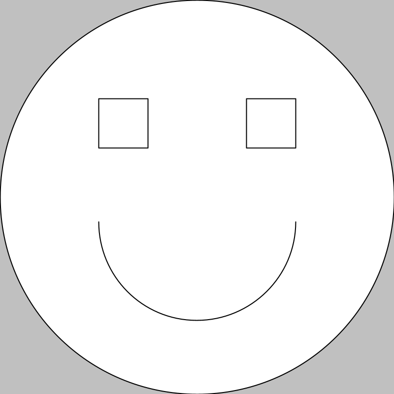
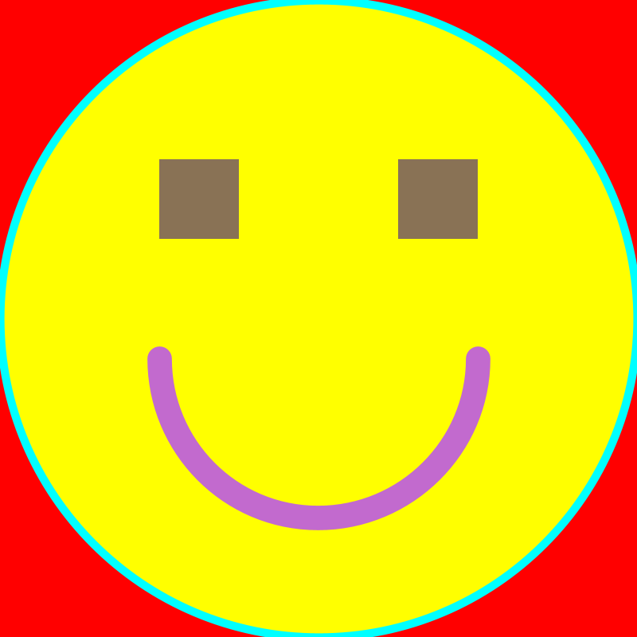

Notes for Class Meeting 1
Goals:
- Introduction to course (Canvas, syllabus)
- Download and run VSCode (an IDE for working with the Python programming language)
- Create static drawings using Python and the dudraw package
- Create drawings using basic shapes with different locations, sizes and colors.
- Create functions as a way of separating code into logical blocks
What are Python, VSCode and dudraw?
Python is a programming language, one of the languages commonly used in industry and academia.
VSCode is free software that allows you to create and run Python programs. To create a Python program, you first write code in a text editor. The VSCode program has a built-in editor that you will use for this step. Then, the Python code that you write must be converted to instructions that a computer can directly understand. This conversion step is known as compiling. VSCode provides the ability to compile Python programs. You can then run (execute) the compiled computer instructions, and VSCode also has an interface that allows you to do that. Finally, when you run your programs, often you will accidentally have made mistakes (called "bugs"). The process of figuring out and fixing these errors is called "debugging". The VSCode program has built-in components that help you debug. Since VSCode has these many capabilities rolled into one program (editing, compiling, running, debugging), it is called an Integrated Development Environment (or IDE). There are many IDEs for Python available, some free and some for purchase. VSCode is one of the common IDEs used today in industry.
dudraw is a software package containing a collection of Python functions (code) for producing simple graphical output and animations. It is a modification and enhancement of code written and developed at Princeton University for undergraduates to use in beginning programming classes. It is available for free. You may find more information here: https://cs.du.edu/~intropython/dudraw/
First graphics program
Key ideas of the draw_line program using dudraw:
- A Python program which uses the `dudraw`` library to draw several lines is shown below:
"""
Example program to draw several lines using dudraw
Author:
Date:
Description of program
"""
import dudraw
# Create a canvas which is 500 pixels by 500 pixels
dudraw.set_canvas_size(500, 500)
# draw two lines on the canvas
dudraw.line(0.33, 0.0, 0.66, 1.0)
dudraw.line(0.66, 0.0, 0.33, 1.0)
# show the canvas for 10000 milliseconds
dudraw.show(10000)
- When using DUDraw, start by setting the size of the canvas you are drawing on using
dudraw.set_canvas_size() - The numbers represent the size of the canvas in pixels. The first number is the width in pixels and the second is the height in pixels. Pixels are the smallest "picture element" which can be drawn on the computer screen.
- The
dudraw.line()statement draws a line between two endpoints (locations) on the canvas. The first two numbers specify the x and y coordinates (location) of the first endpoint and the last two numbers specify the x and y coordinate (location) of the second endpoint. dudraw.set_canvas_size()anddudraw.line()are examples of commands, also known as "function calls". Commands may take parameters (information), which go inside the parentheses and which give the details about what you want the command to do.- Go to https://cs.du.edu/~intropython/dudraw/ for detailed information about graphics commands available in DUDraw.
- Just like in your algebra or calculus classes, the origin (x=0, y=0) in
dudrawis the lower left-hand corner. Values for x increase to the right and values for y increase upwards, like you're used to in your mathematics classes. - The default scale on the axes in
dudrawis 1 unit horizontally and 1 unit vertically for the entire window. This can be changed if you like. The code below changes the scale creates a scale of 1 unit per pixel.
import dudraw
# create a 600 pixel wide by 400 pixel tall canvas
dudraw.set_canvas_size(600,400)
# set the scale on each axis to be one unit per pixel
dudraw.set_x_scale(0, 600)
dudraw.set_y_scale(0, 400)
# fill the background with light gray
dudraw.clear(dudraw.LIGHT_GRAY)
# draw a line from upper left corner to lower right corner
dudraw.line(0, 400, 600, 0)
# show the canvas for 10000 milliseconds
dudraw.show(10000)
- The code we write is called source-code, readable by people. The compiler converts source-code into machine-code, which is executable (runnable) by the computer. In VSCode, after making changes to your code, click the "play" button to compile and then execute (run) the program. If your code has a syntax error (which is like a grammatical error), then the compiler gives an error message, and the code will not run until you fix it. If your code has a logical error (which we refer to as a bug), then your program will compile and run, but will not behave the way you expect.
- Comments are embedded in a program. Their purpose is to help people reading the program to understand the thought process of the programmer (you). The compiler ignores them, so they have zero effect on how the program runs. Comments should add conceptual information rather than just parroting back what the code itself says. So for example, here is some Bad commenting, which does not add any additional information for the reader:
# Here is an example of some unhelpful comments:
dudraw.set_canvas_size(600,400) # make the size 600 by 400
dudraw.line(0, 400, 600, 0). # make a line
- There are two types of comments: block comments and in-line comments. Block comments are bracketed between the symbols
'''or""". Everything between those two symbols is a comment, ignored by the interpreter. In-line comments start with the symbol#. Everything after the#on the same line is a comment and is ignored by the interpreter, - Use tabs to properly indent code.
Second graphics program: using circles, arcs and rectangles to draw a happy face
"""
Author: Jane Smith
Date: September, 2021
My second graphics program:
Draw a happy face using rectangles, circles and arcs
"""
import dudraw
# Create a 400 wide by 400 tall canvas to draw upon
dudraw.set_canvas_size(400,400)
# Set horizontal scale to be one unit per pixel
dudraw.set_x_scale(0,400)
# Set vertical scale to be one unit per pixel
dudraw.set_y_scale(0,400)
# gray background
dudraw.clear(dudraw.LIGHT_GRAY)
dudraw.set_pen_color(dudraw.WHITE)
dudraw.filled_ellipse(200,200,200,200)
dudraw.set_pen_color(dudraw.BLACK)
# draw the head
dudraw.ellipse(200,200,200,200)
# draw the left eye
dudraw.rectangle(125,275,25,25)
# draw the right eye
dudraw.rectangle(275,275,25,25)
# draw the smiling mouth
dudraw.arc(200,175,100,180,360)
dudraw.show(10000)
Program output:

Key ideas of the happy-face program:
- Make it a practice to use on-line documentation.
- For rectangles, the first two parameters passed to the
dudraw.rectangle()command are the x- and y-coordinates of the center of the rectangle, and the second two numbers are the half-width and half-height of the rectangle. - Draw circles with the
dudraw.ellipse()command. Draw disks (filled circles) with thedudraw.filled_ellipse()command. For these two commands, the first two parameters are the center of the ellipse, the second two parameters are the half-width and half-height of the ellipse (for a circle, the half-width and half-height should both be the same, and equal to the radius). - An arc is part of a circle. The parameters to the
dudraw.arc()command are two numbers for the center of the circle, then radius, and finally start and stop angle. Angles are measured in degrees. Like you see in a trigonometry class, an angle of 0 will point in the positive x-direction and increase in a counter-clockwise direction.
A modification to the happy-face program: creating and using our own commands (aka functions)
It is often useful to separate parts of our code into logical blocks and to create new commands (or functions) using these snippets of code. This strategy is helpful because it makes it more convenient to share code with each other. But additionally, as we'll see in a future class, creating functions allows us to write more flexible code and to avoid duplicating our work. Below is a version of the happy face program that defines and uses its own command (function). The output is identical to the original version.
"""
Author: Jane Smith
Date: September, 2021
Improvement to my second graphics program:
Draw a happy face using rectangles, circles and arcs
This time use a method to separate a logical block of code
"""
import dudraw
# This function draws a primitive smiling face, filling the region from (0,0) to (400,400) */
def draww_face():
dudraw.set_pen_color(dudraw.WHITE);
dudraw.filled_ellipse(200,200,200,200);
dudraw.set_pen_color(dudraw.BLACK);
dudraw.ellipse(200,200,200,200); # Draw the head
dudraw.rectangle(125,275,25,25); # left eye
dudraw.rectangle(275,275,25,25); # right eye
dudraw.arc(200,175,100,180,360); # smiling mouth
# Create a 400 wide by 400 tall canvas to draw upon
dudraw.set_canvas_size(400,400)
# Set horizontal scale to be one unit per pixel
dudraw.set_x_scale(0,400)
# Set vertical scale to be one unit per pixel
dudraw.set_y_scale(0,400)
# gray background
dudraw.clear(dudraw.LIGHT_GRAY)
draww_face()
dudraw.show(10000)
Third graphics program: a happy face with more colors
"""
Author: Jane Smith
Date: September, 2021
My third graphics program:
Draw a happy face using rectangles, circles and arcs
But add some color and changes to line thickness this time
"""
import dudraw
# This function draws a primitive smiling face, filling the region from (0,0) to (400,400)
def draw_face():
dudraw.set_pen_width(3) # set line thickness to 3 pixels
dudraw.set_pen_color(255,255,0) # yellow for the face
dudraw.filled_ellipse(200,200,200,200) # face
dudraw.set_pen_color(0,255,255) # cyan to outline the face
dudraw.ellipse(200,200,200,200) # Draw the outline of the face
dudraw.set_pen_color(137,114,85) # Brown for the eyes
dudraw.filledRectangle(125,275,25,25) # left eye
dudraw.filledRectangle(275,275,25,25) # right eye
dudraw.set_pen_color(194,106,206) # lavender for the lips
dudraw.set_pen_width(10) # 10 pixel-wide line for the mouth
dudraw.arc(200,175,100,180,360) # smiling mouth
dudraw.set_canvas_size(400,400) # Create a 400 wide by 400 tall canvas to draw upon
dudraw.set_x_scale(0,400) # Set horizontal scale to be one unit per pixel
dudraw.set_y_scale(0,400) # Set vertical scale to be one unit per pixel
dudraw.set_pen_color(255,0,0) # bright red
dudraw.filled_rectangle(200,200,200,200) # red background
draw_face()
dudraw.show(10000)
Program output:

Key ideas of the third program:
- A common way to specify colors in computer graphics is to define the amount of red light, green light and blue light to use. The intensity of each color is a number from 0 to 255. For example, the command
dudraw.set_pen_color(255,0,0)sets the current color to full intensity red, no component of green, and no component of blue. - Since colors on the screen are defined by adding light intensity rather than adding pigment intensity, mixing colors on the screen works differently than mixing paint. For example, black is an intensity of 0 for all three colors, white is an intensity of 255 for all three colors, and pure yellow comes from full intensity red (255) plus full intensity green (255). For more details, see https://en.wikipedia.org/wiki/RGB_color_model.
- To find an on-line color selector tool, do an internet search on "rgb color picker". This type of tool gives you numerical red/green/blue color values for specific colors.
- To change the width of lines (and arcs), use the
dudraw.set_pen_width()command, which takes one parameter that gives the width of the line (or curve) in pixels. For example,dudraw.set_pen_width(3)sets the line thickness to be 3 pixels.